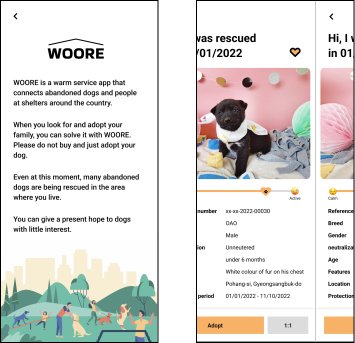

WOORE
How to improve awarness of stray dogs?
School Assignment
Role
User Research
UI Design
Prototyping for usability test
Usability Testing
UI Design
Prototyping for usability test
Usability Testing
Overview
In these days, many coffee lovers and companies are interested in protecting environment and making an effort in their own way. Representative one is to use reusable cup. Collecting tumblers of large companies has become the latest trend in Korea. However, other environmental problems such as greenhouse gas emissions occurs as the production of reusable cup is growing. This project is to empower consumers helping them understand how their actions impact the envrionment by monitoring of their frootprint.
Define
Brief
This project is a self-directed design project on a topic of I chose. In this project, design was used as a tool for inquiry and research. I was required to create meaningful participatory experiences with neotribe I chose that advance understanding of a topic and engage people in a participatory, co-design process.
Approach
I approached this project from deciding neotribe in South Korea since I was in Korea and it was easier and getable for me to conduct research. I chose Korean who are willing to adopt dogs as my neotribe. After that, I was able to explore deeply in order to choose my topic. My idea and process had developed while I had workshop to my neotribe with toolkit through RTD(research through design).
Research Through Design
workshop
I ran the online workshop for 3 times through Miro board. There were 4 activities and interview on workshop, and it ran about 30-45 minutes. 2 activities were about normal dogs participants think and imagine. Other activities were about stray dogs. I got 6 records and documented the full particulars on the Notion. While running workshop, I found that there were many problems about adopting stray dogs. Most participants wanted to adopt and raise dogs but they do not have enough information for adoption. And there was no one who do not have prejudice of stray dogs. Each workshop had improved because of the communication(interveiw) with each participant. It was able to get sincere answer through interview.
“I do not know how much do I need to prepare for adopting and raising a dog.”
““It is not easy to access shelter, Websites are so bad to see because of their UI. ”
“I think stray dogs are defective, old or have disease”
“I have rescued street cat and I usually feed them, but I am scared to rescue stray dogs because of rabies.”
“I want to adopt the dog who is very active to go out with my dog. But it is hard to find”
“Abandoned dogs will be mix breed dogs”
*Answers are based on workshop and interviews

‘How can we change people’s negative perception of stray dogs’
‘How can we encourage them to adopt stray dogs?’
‘How can people feel familiar with stray dogs like normal dogs?’
Insight
Koreans usually adopt dogs through acquaintances and pet shops. The adoption rate of abandoned dogs was significantly low, and there were many negative perceptions of stray dogs in workshops as well. People did not know the complicated adoption process. And they have many prejudices that stray dogs may have been abandoned due to disease and old age. However, there are many types of dogs in shelter. In addition, depending on the trend, many purebred dogs are abandoned. People are not aware of the application for adopting stray dogs, and do not like the website because of bad UI/UX.
UX Challenge
App Improves prejudice against abandoned dogs, provide friendly and specific information, and introduce a soulmate system into the app. Therefore, it aims to increase the adoption rate and lower the dissolution of adoption rate. It aims to increase the accessibility of abandoned dog adoption and to give a sense of trust by engaging in adoption, and further improve the image of abandoned dogs as sick and dirty.
Research Methods : 1:1 Interviews, Online Survey

Analysis
persona
Name
Age
Occupation
Home&Family
Goal
Frustration
Jimin Park
35
Barista
He lives alone in studio.
He opened his cafe recently, and he earned enough money, he wants to adopt a dog.
He was recommended to adopt a dog from her girlfriend. But he does not have any information about stray dogs.
Name
Age
Occupation
Home&Family
Goal
Frustration
Hailey Kim
24
Student
She lives with family in 3rooms apratment.
She wants a new familiy to live with her. She hopes her new friend is acitive because she loves activity.
She does not know how and where to find her dog. And she does not want to adopt pet shop dog because she knows well about the reality of producting dogs in Korea.
Journey Map
“One of his dream was to commute everyday with his dog. He was not able to carry out that dream but he can now because he opend his own cafe recently. His girlfriend recommended to adopt stray dogs because she knows some pet shop is illegal. He is worried because he wanted to adopt Maltese at pet shop and has no information about stray dogs. But he is trying to find through online”
“Hailey wants the dog who is very active and bright. She nowadays imagine her and her dogs are running every morning. However, she has no experience that she raise the dog. So she is worried when she adopt the dog since she does not know any process of adoption.”
Core Needs - Solution - Design
01
Want to find the dog who is compatible with me
Provide the service that is able to match each characters

02
Lack of information on abandoned dogs.
Provide sufficient information from basic information of dogs to adoption.

03
Want to share information about dogs
Provide communication service to share information
04
Have bias against stray dogs.
Let people know they are just same with the normal dogs they think.
Mix breed in Korea is negative meaning, so use another special and familiar word instead.
Mix breed in Korea is negative meaning, so use another special and familiar word instead.

05
Have bias against mix breed. Think stray dogs are all mix breed.
Design
Workflow
Wireframe
Stakeholder map of WOORE

You can see the video of Ncup
Click the image and enjoy!
Click the image and enjoy!